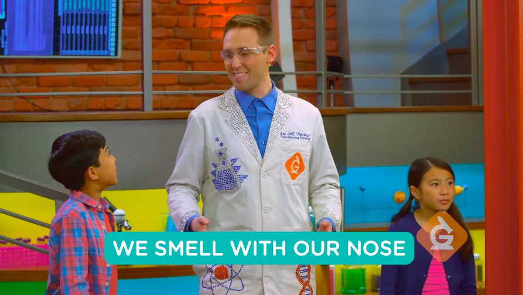

Description: Through this interactive video, explore your five senses with a scientist and two other students! How do animals sense things in the environment and why is this important? This resource also includes video demonstrations of arts and crafts activities that are sure to stimulate your senses!
Quote: "Make a scratch and sniff painting to explore your senses! You can use your nose to smell the flavor, eyes to observe the colors of the design, ears to hear the rubbing sound, and your finger to feel the texture."